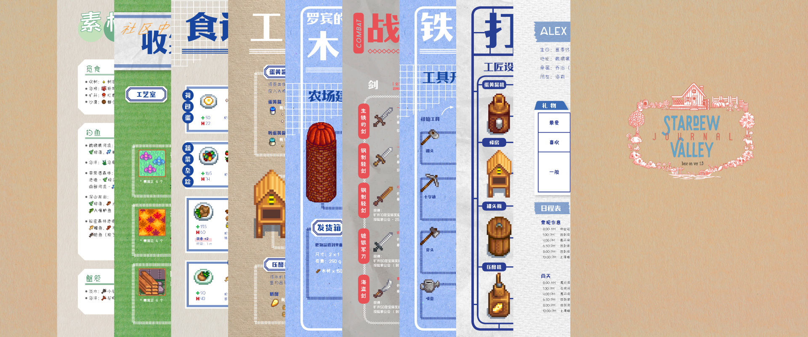
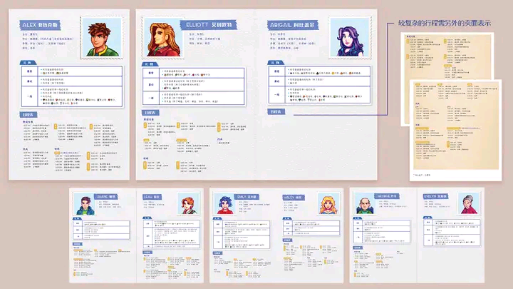
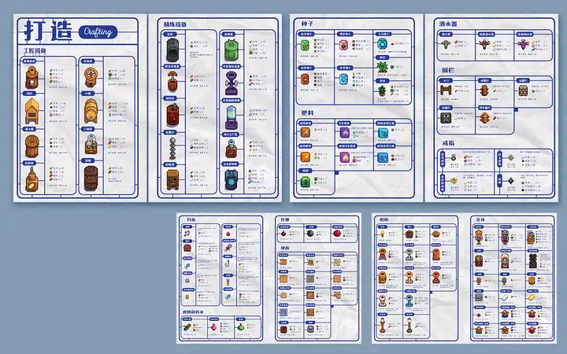
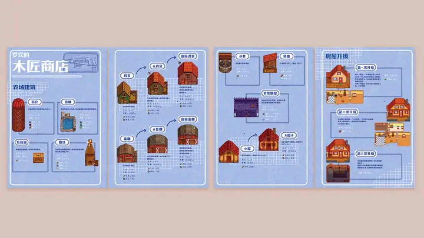
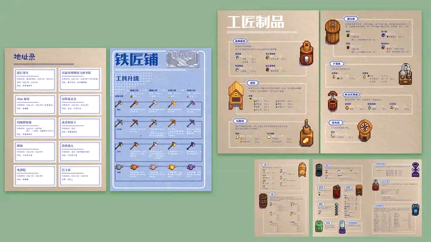
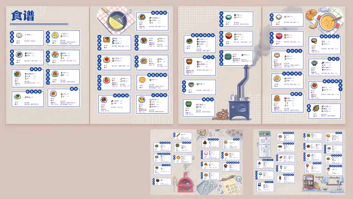
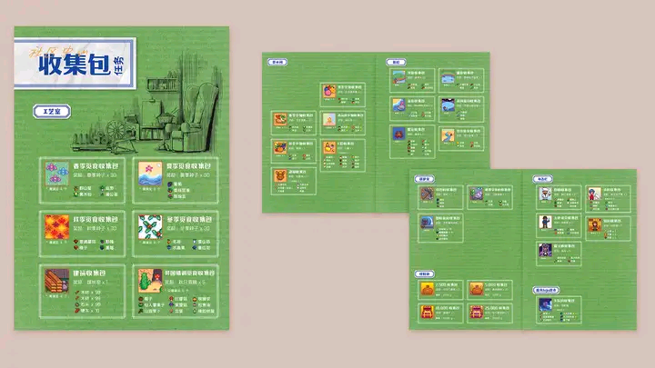
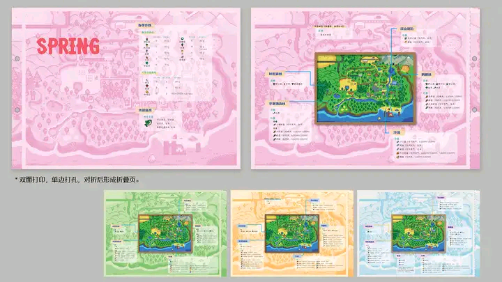
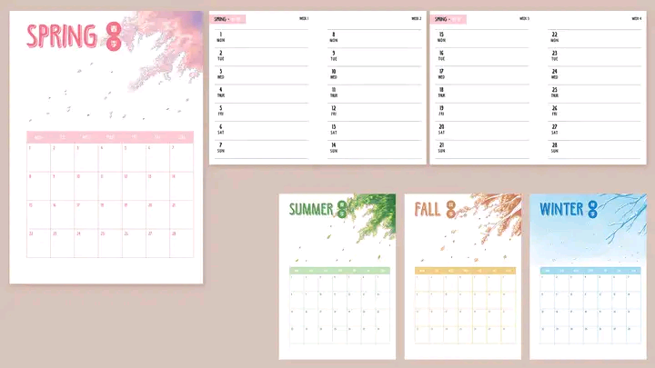

📔星露谷攻略笔记¶

仓库说明¶
Info
在开始阅读本仓库笔记之前，请先仔细阅读本章节的说明文档，这也许会帮助您解决一些困惑。
请注意！本仓库笔记图片资源较多，加载速度可能较慢，请耐心等待。如遇资源加载失败，请刷新页面或切换其他网址。
本仓库内容均来自@承承我男神于2020-12-03在百度贴吧-星露谷物语吧发布的自制星露谷攻略笔记项目，请支持原作者。
🚀如果本仓库对您有帮助，可以给本仓库点一颗⭐，让更多人能够看到，也欢迎您把本仓库分享给其他人。
原作者碎碎念
2020-11-11 原帖：跳转链接
大家好，这是萌新第一次发贴，若有格式不规范的地方希望多多包涵+指正。
我在制作一份攻略+手账模式的笔记。
攻略部分（根据游戏1.4版本）包含：
- 人物的礼物喜好+日常作息行程表
- 地点的营业休业时间表
- 菜单打造的材料和解锁条件一览
- 罗宾的木匠店打造农舍/升级房屋所需要的材料
- 铁匠铺升级农具所需要的材料
- 工匠制品所需要的原材料、酿造/腌制时间及基本售价
- 料理的材料和食谱的获得来源
- 社区中心的收集包所需要的材料和解锁奖励
- 每季的当季作物及种子售价、当季鱼类及相应的垂钓地点
方便玩家随时翻阅所需要的信息。
手账部分即日程表，用来记录游戏过程中的“每日任务”、今日计划的农活/其他活、需要送礼的对象等等。
这个项目是用AI（adobe illustrator）和Indesign排版，用sketchbook和procreate绘制插画。
目前项目进度大概是这样： （各part只展示部分内容，并非全部内容）      
当季作物地图：

月计划和周计划部分：

关于攻略部分的内容，我希望达到的效果是涵盖面尽可能的广、在尽可能使通关过程顺畅的同时又不剧透太多使得新鲜感和惊喜度下降，所以攻略部分的内容其实是比较粗糙、不精细的。我的目标只是想做一个方便在游戏进行时同步查阅的线下笔记而已，太详尽就失去探索的乐趣了。
另外我也希望能做到交互设计的理念，由笔记本完善游戏体验、由游戏完善笔记本，所以手账部分连月计划部分都是完全空白的，希望由玩家自己查看杂货店布告板的月历，自己填写当季的生日村民、节日信息，也可以记下作物预计成熟的日子，希望这点不便可以转换成沉浸感。
星露谷是我第一款玩得如此认真投入的游戏，这游戏玩起来巨有毒，想着结束了今天就退出了，结果又想起“哎呀作物快熟了，看看今天可以收成了没” “天气预告说明天雨天，想继续攻略矿井的进度”，就这样不知不觉玩到了早上。
第一次玩，在没有查wiki的情况下懵懵懂懂地感受到了很多惊喜，也有很多悔断肠的操作，例如不清楚作物的成长天数刚播种没几天就换季了（nmd），还有例如不知道村民们的喜好乱送了很多垃圾，过了一年好感度完全没有（只有流浪汉只要是吃的什么都喜欢，勉强有了两心呜呜），还有不小心把收集包的材料卖了、忘了摸狗子、摸鸡鸡（这个不准叠词！）、摸牛子（这个不准加“子”！）等等琐碎的小遗憾……总的来说就是，每天要做的事情太多了，第一次玩非常手忙脚乱，没有好好安排自己的行程，所以后来就想：下次再玩前要查好攻略，备好笔记本记录“今日行程”、抄下必要的信息（成长天数、村民的喜好、制作材料等等）再玩吧。
等终于不懂经历了多少次期末（每次都喊着考完这轮就回去星露谷种田，但最后都未能如愿以偿）终于能快乐回归星露谷时，我发现了一个问题……有太多必要信息需要摘抄了，重点是我的字很丑，所以就想：为什么不干脆整理好了之后打印出来呢？——>既然要打印，为什么我不重新设计排版成我喜欢的样子呢？
所以就有了这个攻略+手账的星露谷笔记
我非常喜欢星露谷，所以想认真去玩，投入在这个世界的每一秒都很开心、很充实、很满足。希望这份自制攻略笔记本也能把这种沉浸感分享给大家。
目前的进度还剩下1）封面设计、2）部分“收集包”的插画、3）月（季）末的插画、4）最后的微调排版。
预计本月底可以完成，届时会发pdf版上来。
（如果希望自己客制化的话，可以在下面留言，我也可以打包indesign文件，可以根据模板自己DIY）
（望我这个flag可以如期完成吧（祈祷）
（话说感觉我完成这个项目之后也还不能回去种田，我还有本子还没画完呜呜……有喜欢bl的腐女腐男感兴趣吗
笔记说明¶
本仓库笔记为原攻略笔记的在线版本，为了方便大家随时随地翻阅观看。
原攻略笔记本体共120页（含封面），附录14+8页，为PDF版本，打印装订成册观感更佳。
打印方式：A5尺寸（本体）及 A4尺寸（附录-四季地图），双面打印，彩色打印效果最佳。
详细说明见下一部分。
文件说明¶
-
文件《[A5] Stardew Valley Journal》为笔记本体，包含一下内容，总共134页：
- 封面
- 人物礼物喜好及日程表
- 地点信息
- 打造清单
- 建造清单
- 农具升级清单
- 战斗物品清单 (1.5新增)
- 工匠制品清单
- 食谱
- 收集包清单
- 素材收集地点 (全季)
- 玩家行程表 (两年份)
- 附录-14页部分人物日程表（需自行裁剪、粘贴在对应人物的页面）
-
文件《[A5] journal renew pages》为四季行程表，供还需要玩2年以上的玩家另外打印、添加进本体中。总共24页。
-
文件《[A4] season map》为附录-四季地图，包含各季节的采集物、鱼类出现的地点、鱼类出没时间、和农作物的种子价格等信息。总共8页。
Warning
《[A4] season map》附录-四季地图是A4！A4！A4！不要打错尺寸了！ 打印、然后打孔，然后对折，就可以完美塞进本体中，衔接位置为素材收集地点（全季节）之后、玩家行程表之前。
Tip
打印出来后，建议放进A5手账本外壳/外皮中，然后根据你买的手账本的孔数打孔。
如果有现成的空白A5手账替换页和打印机的话，也可以自行打印，这样可以省去打孔的步骤（重点是打孔位置保证准确）。
更新日志¶
（10/9/2021）1.5ver 更新：
- 本体：文件《[A5] Stardew Valley Journal 1.5》，“人物礼物喜好及日程表”、“打造清单”、“食谱”、“收集包清单”部分增加了1.5版本的内容，另外新增了“战斗”部分，收录了武器、鞋类和戒指的信息。
- 四季地图：文件《[A4] season map 1.5（放在“素材收集地点”后）》增加了姜岛的地图。
更新后的本体（包含附录-人物行程表），总共150页；四季地图总共10页。
{kind=link}
{kind=link}